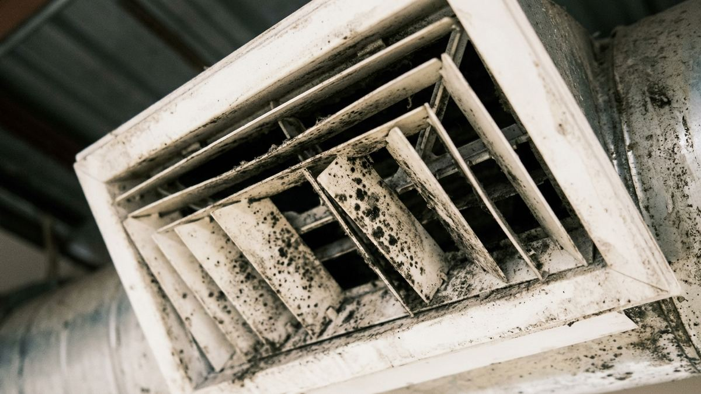

「エアコンをつけるとカビ臭い」「吹き出し口に黒い点が見える」——それは、エアコン内部でカビが繁殖しているサインかもしれません。 店舗やオフィスの空気は、お客様と従業員が毎日過ごす環境です。本記事では、カビが発生する仕組みと、洗浄で清潔な状態を取り戻す方法を解説します。
エアコン内部はカビが育ちやすい環境
エアコンのカビは、空気中のホコリが原因です。微細なホコリやカビ菌がフィルターをすり抜けて内部に入り込み、冷房運転でできる結露（湿気）とあいまって、内部でカビが増殖していきます。
エアコン大手のダイキン工業によれば、カビは酸素・水分・栄養素の3つがそろうと繁殖します。 冷房運転では熱交換器に結露（水分）が生じ、そこに油脂やたんぱく質などを含んだホコリ（栄養）が付着することで、カビが育っていきます。 カビが付着しやすいのは、熱交換器（アルミフィン）やその裏側、ドレンパン、吹き出し口のルーバーなど、フィルターを掃除するだけでは届かない内部の奥です。

https://www.daikin-streamer.com/article/021.html
カビ・汚れを放置するとどうなるか
内部のカビや汚れをそのままにしておくと、次のような影響が考えられます。
- ニオイ：運転のたびに、カビ臭・酸っぱいようなニオイが室内に広がる。飲食店・店舗では、お客様の印象に直結します。
- 空気環境の低下：カビやホコリを含んだ空気が、そのまま室内に送り出されます。
- 効率の低下・電気代：汚れが風量や熱交換をさまたげ、効きが悪くなり電気代も上がります（詳しくは「なぜ効かなくなるのか」をご覧ください）。
- 部品の劣化：カビや汚れは、部品の劣化を早める要因にもなり得ます。
特に、飲食店の厨房まわりは油分を含んだ汚れが付きやすく、一般的な環境よりも汚れの進行が早い傾向があります。
フィルター清掃＋定期的な内部洗浄で清潔を保つ
カビ対策の基本は、ホコリをためないことと内部を乾かすことです。環境省も、フィルターの定期清掃がカビの発生防止につながるとしており、使用時期は2週間に1回の清掃を推奨しています。
- 日常のお手入れ：フィルターの定期清掃、冷房後の送風運転による内部の乾燥。ご自身でも対応できます。
- プロの分解洗浄：フィルターの奥＝熱交換器・送風ファン・通風路にこびりついたカビは、分解して高圧洗浄しなければ落とせません。すでにニオイが出ている場合は、内部にカビが定着している可能性が高く、分解洗浄が有効です。
店舗やオフィスの空気環境は、お客様の満足度や従業員の快適さに直結します。定期的な洗浄で、清潔な空気とニオイのない環境を保つことが、業務用エアコンでは特に重要です。
出典
- ダイキン工業株式会社「DAIKINストリーマ研究所」エアコンにカビが生える！自分でできる掃除法やカビ対策を解説
https://www.daikin-streamer.com/article/021.html - 環境省 COOL CHOICE「みんなで節電アクション！／家庭でできる節電アクション／3.エアコンで節電！」
https://ondankataisaku.env.go.jp/coolchoice/setsuden/home/saving03.html
本記事は、公開情報をもとに一般的な情報提供を目的として作成したものです。健康影響については断定を避け、一般的な範囲で記載しています。掲載内容は各出典元が示す情報に基づくものであり、特定の効果を保証するものではありません。最新かつ正確な情報は各出典元の原典をご確認ください。
カビ臭・汚れが気になったら、
プロの分解洗浄でリセットを
横浜・関東エリアの業務用エアコンクリーニングはINTENSEへ。営業時間外の施工で、お店を止めずに対応します。